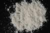

|
|
(For further information on spectroscopy, see:
http://speclab.cr.usgs.gov)
TITLE: Chlorapatite WS423 DESCRIPT
DOCUMENTATION_FORMAT: MINERAL
SAMPLE_ID: WS423
MINERAL_TYPE: Phosphate
MINERAL: Chlorapatite (Apatite group)
FORMULA: Ca5(PO4)3Cl
FORMULA_HTML: Ca5(PO4)3Cl
COLLECTION_LOCALITY: Snarum, Norway
ORIGINAL_DONOR: Wards Scientific
CURRENT_SAMPLE_LOCATION: USGS Denver Spectroscopy Laboratory
ULTIMATE_SAMPLE_LOCATION: USGS Denver Spectroscopy Laboratory
SAMPLE_DESCRIPTION:
Spectrum shows weak Nd+3 bands.
IMAGE_OF_SAMPLE:

END_SAMPLE_DESCRIPTION.
XRD_ANALYSIS:
40 kV - 30 mA, 6.5-9.5 keV
Reference: JCPDS #33-271 (synthetic chlorapatite); Hughes and others (1989)
Found: Apatite plus un indexed weak reflections at 26.61 [near position of the
strongest quartz reflection, the (101)] and at 25.94, 31.71, 32.84, and 43.4
degrees 2 theta.
Cell dimensions: a=9.6078(8), c=6.7912(8) Angstroms, using BaF2 internal standard
Comment: an apatite, probably Cl-rich, plus at least one, and probably two, minor additional phases. Extraordinarily clear pattern with many sharp peaks indicating high degree of crystallinity and compositional homogeneity. Synthetic chlorapatite is reported to have a=9.641 and c=6.771 Angstroms; natural chlorapatite with F.09Cl.88 has a=9.598, c=6.776 Angstroms. Although the cell dimensions of WS416 appear similar to those of the analyzed natural fluorapatite, the cell dimensions of the reference synthetic and natural fluorapatites do not agree. Thus, there is uncertainty in the composition of WS416.
J.S. Huebner, J. Pickrell, T. Schaefer, unpublished data, written communication, U.S.G.S., Reston, VA (1994)
END_XRD_ANALYSIS.
COMPOSITIONAL_ANALYSIS_TYPE: None # XRF, EM(WDS), ICP(Trace), WChem
COMPOSITION_TRACE: None
COMPOSITION_DISCUSSION:
END_COMPOSITION_DISCUSSION.
MICROSCOPIC_EXAMINATION:
END_MICROSCOPIC_EXAMINATION.
SPECTROSCOPIC_DISCUSSION:
END_SPECTROSCOPIC_DISCUSSION.
SPECTRAL_PURITY: 1b2b3b4_ # 1= 0.2-3, 2= 1.5-6, 3= 6-25, 4= 20-150 microns
| LIB_SPECTRA_HED: | where | Wave Range | Av_Rs_Pwr | Comment |
|---|---|---|---|---|
| LIB_SPECTRA: | splib04a r 938 | 0.2-3.0µm | 200 | g.s.= |
| LIB_SPECTRA: | splib05a r 1650 | 0.2-3.0µm | 200 | g.s.= |
| LIB_SPECTRA: | splib06a r 4636 | g.s.= | ||
| LIB_SPECTRA: | splib06a r 4648 | g.s.= |
{kind=link}